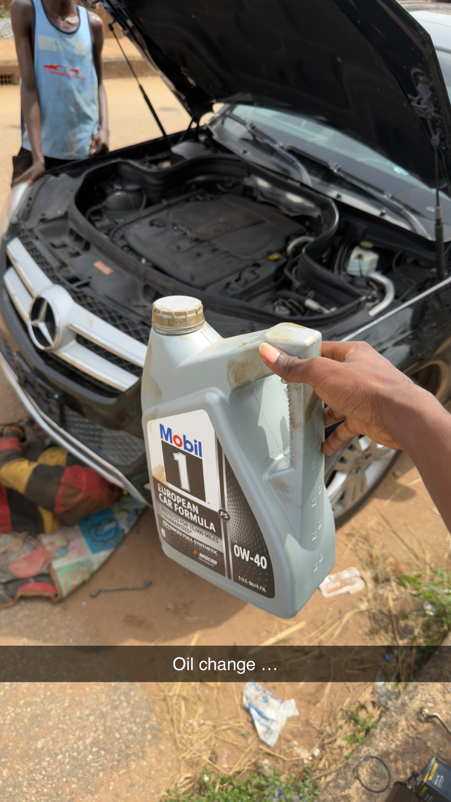
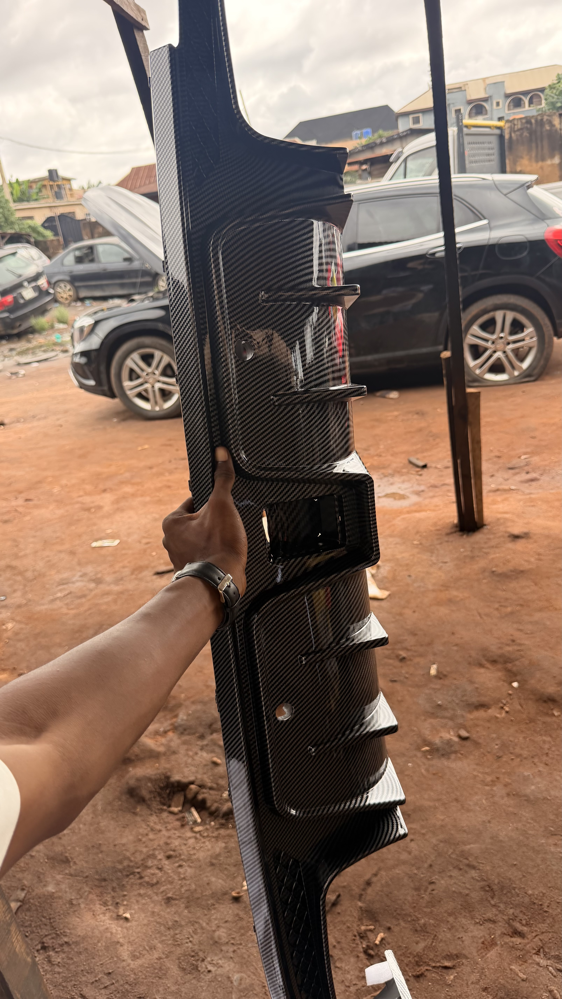
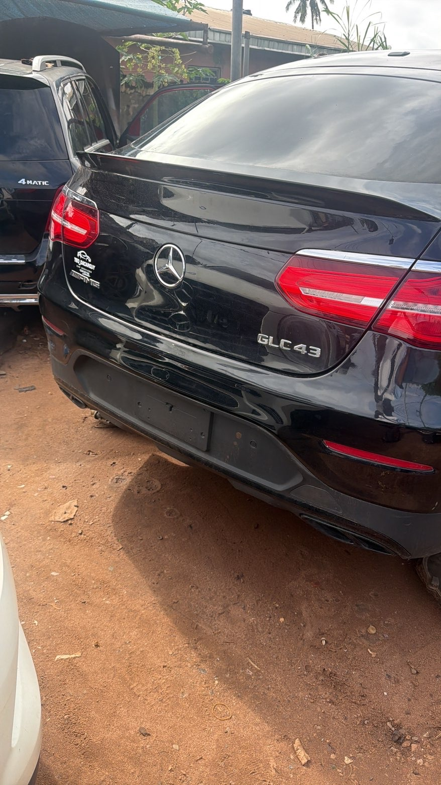
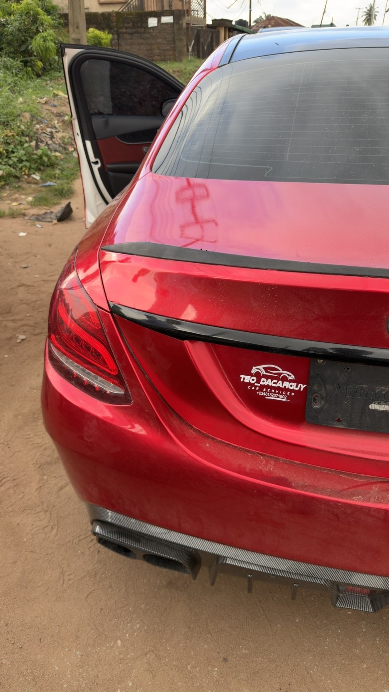
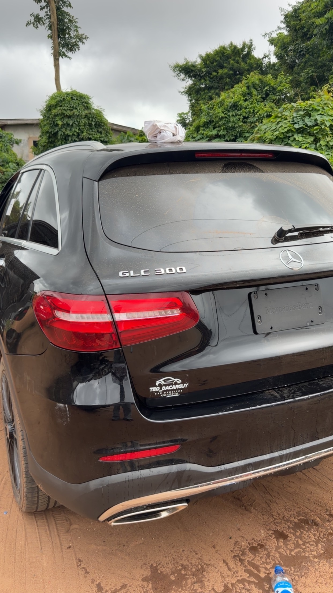
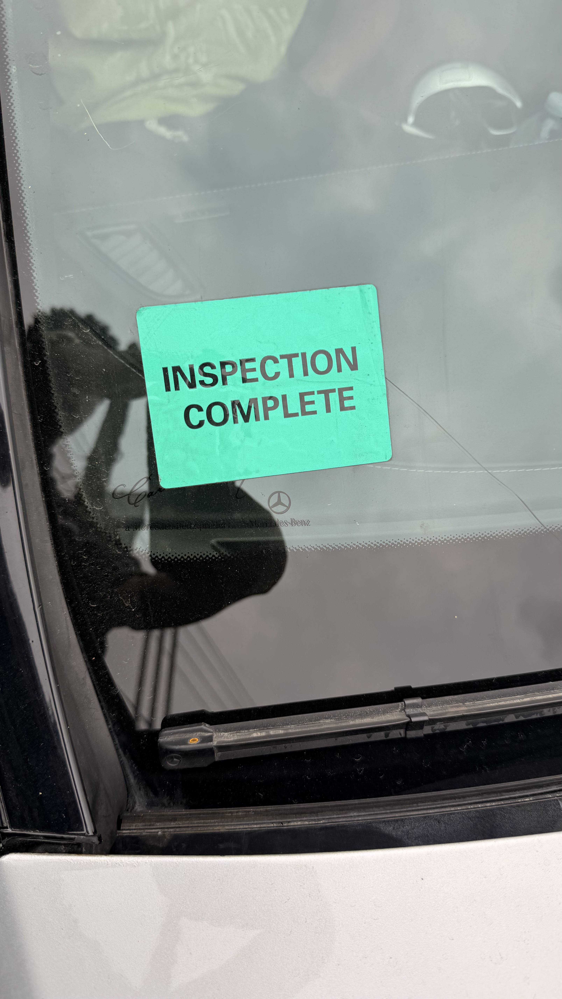
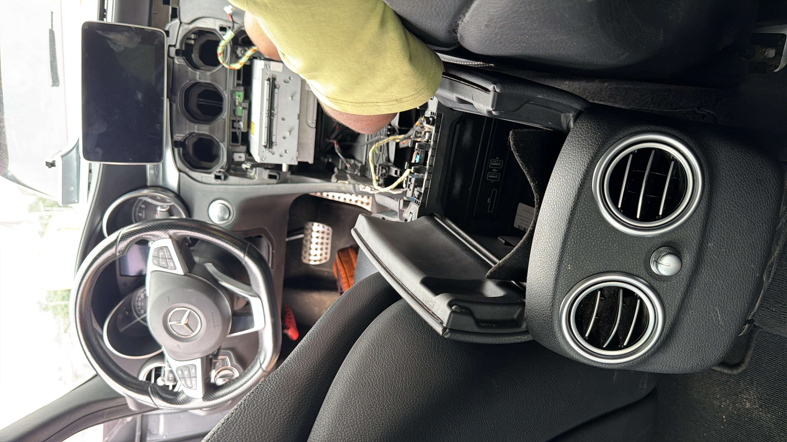
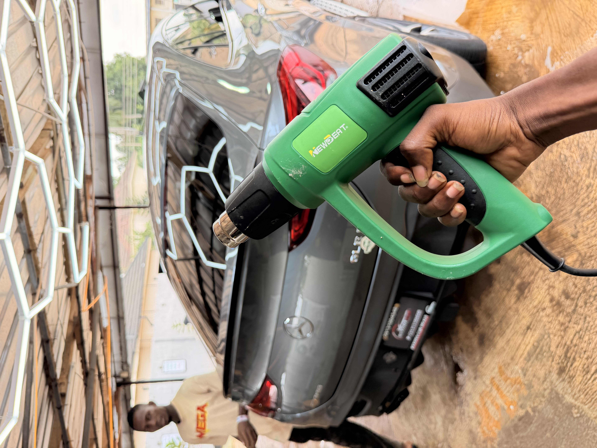

OUR GALLERY
Repairs, sourced vehicles, parts and completed projects are presented here as a fuller gallery of recent work.









Repairs, sourced vehicles, parts and completed projects are presented here as a fuller gallery of recent work.







